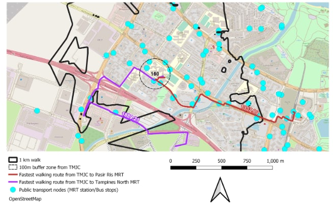

Results and Analysis
To better identify the differences, we will be doing a comparison of Junior Colleges before the 2019 merger and after merger.
1. Accessibility Choropleth Hexagon Layer
a. Before Merger


b. After Merger

From the diagram, taking into account all the roads, we used QNEAT3 to analyse the accessibility. Choropleth map is then used for better comparison of distance between each individual hexagon to each Junior Colleges. The shortest distance between any of the hexagons selected as origin and merged Junior Colleges as the destination point is 256.6 metres, rounding up to 257 metres.

Most of the hexagons are relatively in red or in different shades of red. This possibly suggests that most Junior Colleges are not that accessible as the shortest distance ranges from at least 6132 metres to 68963 metres.
c. Comparison

Comparing both hexagons, we have identified the following differences. Few hexagons, only 7, in 2019 before merger are of a darker shade as compared after merger. Also, the closure of those Junior Colleges are mostly within 10 hexagons, which is about 2500 metres apart.
As such we can conclude that the merger of Junior Colleges does not really have a huge impact on accessibility. Comparing the histograms, it could be said that the general trend of the histograms are mostly similar, ranging from around 6100 metres to 69000 metres.
2. Comparison Feature: Bus Stops
a. Before Merger

b. After Merger

c. Analysis and Comparison
It could be seen that all Junior Colleges have at least one or more bus stops within the 1 km buffer. Since it is noted that accessibility is closely related with the economic and social opportunities as well as development of that area, it is clear that Singapore’s bus services could be deemed as quite well developed. This is because Singapore’s bus services have been around since 1925, nearly a century ago.

The areas circled in yellow are areas of differences before (on the left) and after merger (on the right). We would be discussing only 2 of those areas (those circled in blue and red) since their 1 km buffer regions are overlapped.
As seen from the region circled in blue and red, before merger, one of the Junior Colleges does not have that many bus stops within the 1 km buffer region as compared to the other. As such, the school that has lesser bus stops is being merged together with the one that has a higher number of bus stops within the buffer region. This could possibly suggest that the merger of schools has allowed schools to be more accessible as compared to before.
3. Comparison Feature: MRT
a. Before Merger

b. After Merger

c. Analysis and Comparison
On the other hand, not all Junior Colleges have MRT stations within the 1 km buffer region, particularly, schools that are near the Downtown area and South of Singapore tend to have more than 1 MRT station nearby. A possible reason could be because those Junior Colleges are near the Central Business District where most people would come down for food, entertainment & Leisures and work. Since most people are situated there during normal day time, it is appropriate for the Government to have built that many MRT stations around.

Comparing both figures, the area circled in blue suggests that the Junior College that does not MRT within the 1 km buffer region is merged together with another school that has a closer MRT station. However, on the other hand, the regions circled in red seem to show that even if there is a MRT station within the 1 km buffer region, schools are still forced to be merged. This suggests a potential that the reason for certain schools being selected to be closed could be due to other factors such as availability of school resources.
4. Comparison Feature: Walking Distance
The various walking distances and speeds are further analysed after the merger with all 8 JCs. In no order of merit, they are Tampines Meridian JC (TMJC), Yishun Innova JC (YIJC), Pioneer Jurong JC (JPJC), and Anderson Serangoon JC (ASRJC). The QNEAT routing shortest path plugin has been used to aid our analysis.
a. Anderson Serangoon JC

From Anderson Serangoon JC, we can see that there is Yio Chu Kang MRT station and the bus interchange is in the near vicinity of about 378.57meters, it is decently near to the JC and is within walking distance. Additionally, there are bus stops situated right in front of the JC, which is as close as 238.53 metres of walking distance. Therefore, for this particular JC after the merger, the accessibility should still be fairly great.
b. Jurong Pioneer JC

In the west, the two JCs merged were Jurong JC and Pioneer JC, with the final location of Pioneer JC, situated near Bukit Panjang. From the analysis from the print layout above, it seems that the JC is not near any MRT stations, noting that the walking distance to the two nearest stations - Choa Chu Kang MRT and Bukit Panjang MRT is approximately 1.23 kilometres and 1 kilometre respectively. Unfortunately, walking distance to the LRT stations aren’t much better, as Keat Hong LRT station is a whopping 1.33 kilometres from the school and Phoenix is about 911 metres away. Therefore, if a student does not want to walk the humongous distance to the subway networks, there are bus stops situated quite far away as the nearest is about 479 metres away from the JC. With the students coming from different parts of the west, the accessibility here may need to be reviewed and hopefully improved.
c. Yishun Innova JC

For the location of the newly merged Yishun Innova JC, it seems that the walking distance is closer towards Yishun MRT ( 853.4 metres ) than to Khatib MRT ( 1.007 kilometres ) as the walking route cuts through a park. It is notable that there are also a pair of bus stops to complement the transport network. The nearest bus stop is in front of the JC with a mere distance of 132.41 metres only where trunk/feeder services can be utilised by students and staff. Students do not have to walk far unlike JPJC.
4. Tampines Meridian JC

With the final merged JC in the east, from the merger of Tampines JC and Meridian JC, it is merged to the location of the western portion of Pasir Ris. Unfortunately, based on our analysis, it seems that the nearest operational MRT station, Pasir Ris MRT on the East-West line, is situated 1.337 kilometres of walking distance away from TMJC. This is ludicrously far from practically walkable for students to the JC. However, we can see that from a 150 metres buffer zone, there are many bus stops catering to the JC.
It is noted that with the upcoming Cross-Island MRT line, there is one that may be potentially near TMJC’s vicinity - Tampines North MRT station that is still under construction/planning. However, after a walking-distance analysis, it seems that according to the existing road network, it is still a ludicrous 1.88 kilometres away from the upcoming station. This is likely the infrastructure may not have been developed yet as the station has not been fully constructed yet as the walking routes make many redundant turns according to the prevailing road/path networks. We hope that the accessibility will be improved as there are only bus stops surrounding the JC as we believe many students and staff will benefit from these transport developments.
5. Conclusion
To conclude, the merged locations for some JCs have better locations, and we hope that the Land Transport Authority will review the transport nodes and add some infrastructure such as overhead bridges or overpasses to aid in transport.